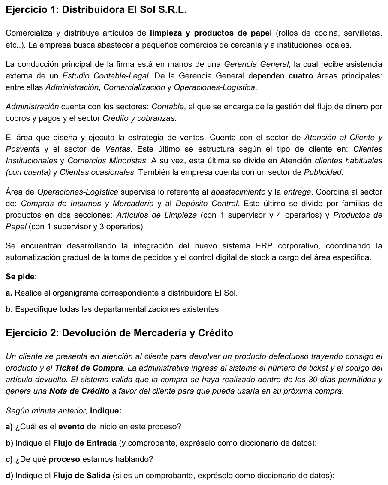
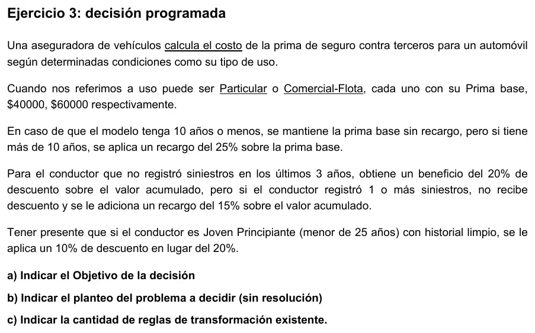

1° parcial, agosto de 2026 (práctica)
1° parcial, 2026
Enunciado




Propuesta de respuesta
Respuesta no verificada. La propuso Luta Studios con inteligencia artificial y ningún docente la revisó. Puede tener errores.
Ejercicio 1.a. Organigrama
La cuarta área no tiene nombre en la minuta. Es la que lleva «el control digital de stock» y la integración del ERP, así que va como Sistemas. Compras queda en Operaciones-Logística porque la minuta la pone ahí, aunque el apunte la ubica en Comercialización en una empresa comercial.
Tocá el dibujo para verlo en pantalla completa.
Ejercicio 1.b. Departamentalizaciones
| Dónde | Qué agrupa | Tipo |
|---|---|---|
| Gerencia General | Administración, Comercialización, Operaciones-Logística y Sistemas | Por funciones |
| Administración | Contable y Crédito y cobranzas | Por funciones |
| Comercialización | Atención al Cliente y Posventa, Ventas y Publicidad | Por funciones |
| Ventas | Clientes Institucionales y Comercios Minoristas | Por tipo de mercado o cliente |
| Comercios Minoristas | Clientes habituales (con cuenta) y clientes ocasionales | Por tipo de mercado o cliente |
| Operaciones-Logística | Compras de Insumos y Mercadería y Depósito Central | Por funciones |
| Depósito Central | Artículos de Limpieza y Productos de Papel | Por productos |
La minuta da las pistas. Ventas se estructura «según el tipo de cliente» y el Depósito «por familias de productos».
Ejercicio 2. Devolución de mercadería
a) Evento de inicio. El cliente se presenta en Atención al Cliente para devolver un producto defectuoso, con el producto y el Ticket de Compra.
b) Flujo de entrada. Es lo que la administrativa ingresa al sistema, con los datos mínimos. El Ticket de Compra es el comprobante que trae el cliente.
Flujo de datos de entrada
E1 datos-devolución = nro-ticket + cod-artículo
Comprobante que trae el cliente
ticket-compra = nro-ticket + fecha-compra + datos-empresa(e)
+ 1{ cod-artículo + descripción + cantidad + precio-unitario + importe }N
+ total + forma-pago(D)
Estructura de datos
datos-empresa(e) = razón-social + CUIT + domicilio
Elementos de datos discretos
Atributo: forma-pago (D)
Descripción: Forma en que se pagó la compra
Valores posibles: Efectivo, tarjeta de débito, tarjeta de crédito, transferenciac) Proceso. Devolución de mercadería defectuosa con emisión de una nota de crédito. Es un proceso de posventa, del sector Atención al Cliente y Posventa de Comercialización.
d) Flujo de salida. La Nota de Crédito. Lleva todos los datos, también los que salen de una cuenta, como el importe.
Flujo de datos de salida
S1 nota-crédito = nro-NC + fecha-emisión + datos-empresa(e) + datos-cliente(e)
+ nro-ticket + fecha-compra
+ cod-artículo + descripción + cantidad + precio-unitario
+ importe-total + motivo ** devolución por producto defectuoso **
Estructura de datos
datos-cliente(e) = nombre + apellido + tipo-nrodocSi la compra tiene más de 30 días, el sistema no genera la nota de crédito y la administrativa le informa al cliente. Eso es una alternativa, no un flujo de salida de este camino.
Ejercicio 3. Decisión programada
a) Objetivo. Determinar el costo de la prima del seguro contra terceros de un automóvil.
b) Planteo. En entrada limitada, cada condición con S o N.
| Condición | Valores | |
|---|---|---|
C1 | ¿El uso es Particular? (si no, es Comercial-Flota) | S, N |
C2 | ¿El modelo tiene más de 10 años? | S, N |
C3 | ¿El conductor registró siniestros en los últimos 3 años? | S, N |
C4 | ¿El conductor es joven principiante, menor de 25 años? | S, N |
| Acción | |
|---|---|
A1 | Tomar la prima base de $40000 |
A2 | Tomar la prima base de $60000 |
A3 | Aplicar un recargo del 25 % sobre la prima base |
A4 | Aplicar un descuento del 20 % sobre el valor acumulado |
A5 | Aplicar un descuento del 10 % sobre el valor acumulado |
A6 | Aplicar un recargo del 15 % sobre el valor acumulado |
c) Cantidad de reglas. , antes de reducir. En entrada extendida da lo mismo, porque las cuatro condiciones tienen dos valores, .
La edad solo cambia algo cuando el conductor no tuvo siniestros. Si se reduce, las reglas con siniestros se juntan de a dos y quedan 12. La consigna pide las de antes de reducir.
Respuesta no verificada. Puede tener errores.
Se armó con la página del 1° parcial (organigrama, departamentalización, áreas genéricas y comprobantes), la del 2° parcial (evento externo iniciador y notación del diccionario de datos, con el ejemplo del banco) y la del 3° parcial (cómo plantear el problema de decisión y cantidad de reglas).
Quedó en duda: El nombre de la cuarta área, Sistemas, es una deducción. La minuta dice solo «el área específica». Ninguna página dice cómo se dibuja el asesor externo («preguntalo en tu comisión»), y acá cuelga al costado de la línea de la Gerencia General. La minuta no dice cómo se identifica al cliente en la nota de crédito, porque la administrativa ingresa solo el ticket y el artículo. Los datos del ticket salen de los de la factura, porque el apunte no describe un ticket. En el objetivo, la consigna subraya «calcula el costo» y las páginas dejan abierto si el objetivo admite «calcular». Un Moodle de 2021 lo daba por malo, por eso dice «determinar».
¿Cómo te fue?
Marcá cada tema del examen.
- OrganigramaEl organigrama, en 1° parcial
- DepartamentalizaciónDepartamentalización, en 1° parcial
- Flujos de entrada y salida1° parcial
- Decisión programadaDecisiones programadas y no programadas, en 3° parcial